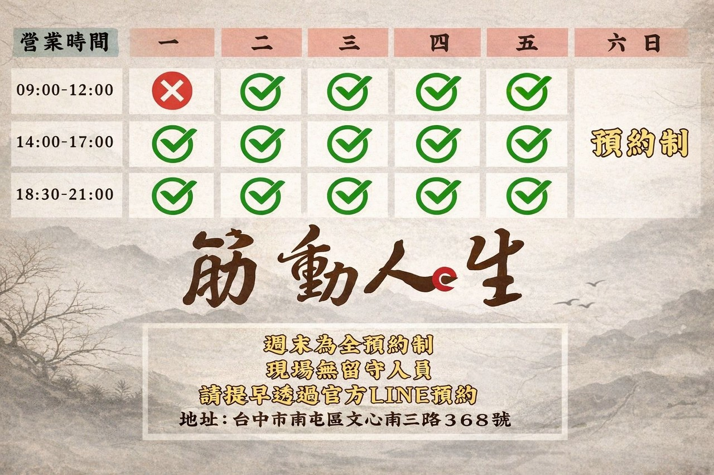

).png)
平日忙於生活
別忘了留點空間給身體
目前為平日時段駐點師傅不在現場
但您的身體痠痛可以不用等
隨時可預約
台中南屯總院 ｜ 全身調理
- 特色 尋找代償源頭、深層順開緊繃
- 適合 反覆痠痛、想要徹底解決結構失衡的你
-
時間

$1800
週末來保養
慈雲慈航寺週末駐點 ｜ 重點區域調理
- 特色 專攻肩頸 ‧ 腰臀，快速釋放壓力找回空間
- 適合 週末來拜拜，想試看看再做決定、快速找回輕鬆的你
- 時間 僅限每週六、日現場駐點
$600/次
讓 AI 助理根據您的狀況
進行人體力學初步分析
Ver 1.1.0 - 智能連線尋路版
✨ 筋動人生 AI 簡易身體評估
* 若無上述情況，可直接略過
分析結果